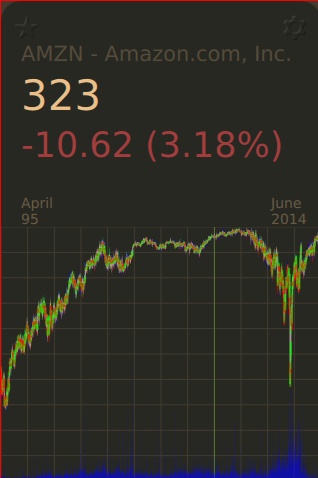
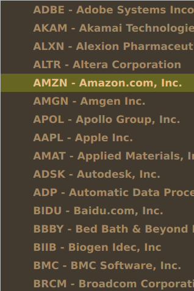
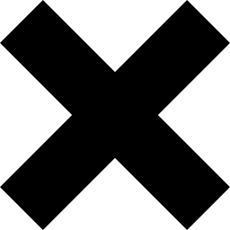

Blog
Don't forget to subscribe to our atom feed.
Categories
Yesod and Angular JS
by Christopher Reichert
June 23, 2014

Recently, while working on a Yesod site I wanted to integrate Angular JS to spice up the design and add dynamic content.
Researching Angular js and Yesod integration via search engines doesn’t yield many helpful results. Michael Snoyman has an example from 2012 (http://www.yesodweb.com/blog/2012/10/yesod-fay-js) with a module named Yesod.Angular provided for integrating Angular with a Haskell/Yesod backend. The problem is most of the code in the module was written against an older version of Yesod, and thus, does not compile with current versions.
I have proposed a pull request to update the example to work with Yesod 1.2, so those who stumble upon it are not confused or blocked. The pull request was merged and should be in the yesod-js repository now.
Read MoreHsQML StocQt - Stock Market Visualization in Haskell and Qt Quick
by Christopher Reichert
June 6, 2014
Recently, I have been working on porting some Qt Quick demo applications to Haskell and HsQML. The idea is to develop more non-trivial examples to showcase the power of HsQML. The outcome has been quite impressive and HsQML has been a pleasure to work with, as usual.
Here are some images of the ported StocQt app:
  
Houston Haskell - Installing GHC and Working With Cabal
by Christopher Reichert
May 2, 2014
The first official meeting for the Houston Haskell Users Group was a success! There seems to be many Haskellers in the Houston area who are hungry to learn more.
Read MoreExploring QML In Haskell
by Christopher Reichert
April 30, 2014



I have recently been experimenting with the Haskell QML binding HsQML. I am a big fan of QML and it’s portability. It’s a very flexible language for user interface development and it makes for a powerful combination with Haskell.
Recently, I wrote about integrating QML code and Haskell using Fay.
HsQML, however, is a more direct way of integrating QML and Haskell. The HsQML approach has the value of the Haskell runtime and garbage collector, among other things (though, Fay may compile the garbage collector, not sure).
This post describes working with HsQML < 0.3.
Read MoreQML integration with Fay and Haskell
by Christopher Reichert
April 15, 2014


If you are reading this, you are probably more or less aware of the JavaScript Problem. Like many, I frequently work with JavaScript. There is no avoiding JavaScript on the web and many corners of the software development industry.
My most recent JavaScript endeavor has been in the world of Qt5 and QML. QML is a solid toolkit for writing fluid and cross-platform user interfaces.
Recently, while experimenting with QML, I had a revelation. What if it was possible to generate QML code from Haskell using Fay. Eureka!
Read MoreGHC Hacking
by Christopher Reichert
April 11, 2014

If you haven’t figured it out already, I am a Haskell fanatic. Haskell is a fantastic language that has continuously driven me to explore new programming concepts and improve my own skill. Quite naturally, I am intrigued by GHC – The Glasgow Haskell Compiler. GHC is an open-source native code compiler for Haskell. GHC is written in Haskell with the majority of the runtime system written in C and C-- [0].
This post describes how to:
- Check out and build the ghc source.
- Add libraries to your inplace ghc instance.
- Make a trivial change to GHCi.
Teasers in Hakyll
by Christopher Reichert
April 8, 2014

While building this blog, one of the primary issues I faced was figuring out how to implement post teasers. Most of the resources I found were using teasers in an rss or atom feed. The Hakyll tutorial on teasers was helpful but I found I needed a little more handholding. Partially, because I misunderstood how template contexts work in Hakyll.
This post describes how to implement teasers in Hakyll on the default generated test site.
Read MoreThe WP-Evernote Plugin
by Christopher Reichert
April 6, 2014
TL;DR We wrote an Evernote Plugin for Wordpress: WP-Evernote
Recently, my brother and I were asked to add support for publishing blog posts on a Wordpress site from Evernote. While taking a look at some existing plugins that might support this workflow, I came across Everpress. Unfortunatly, Everpress is based off using an RSS feed which is no longer supported by Evernote (and hasn’t been for some time).
Read MoreThe Reichert Brothers Blog
by Christopher Reichert
February 7, 2014
Welcome to the Reichert Brothers Blog!
We finally built it! Our hope is to give back to the software development community that we have learned so much from. We encounter a lot of peculiar problems throughout our hacking journey and we want to make this a forum to discussion related issues.
Read More